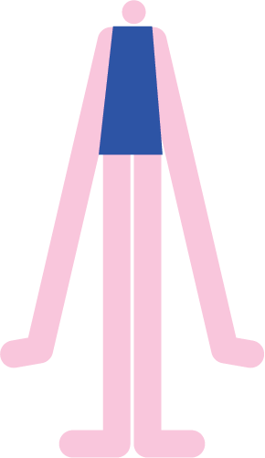
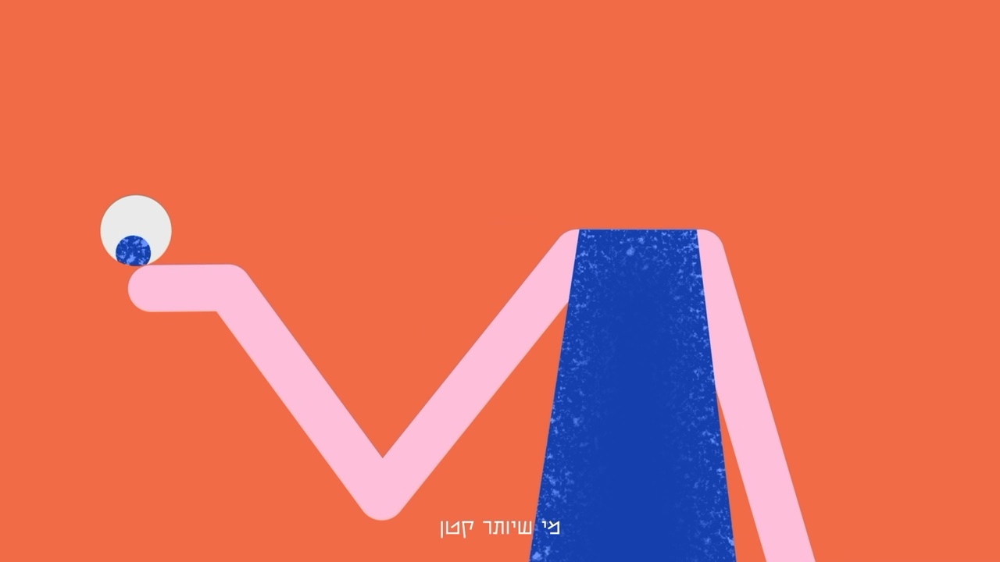
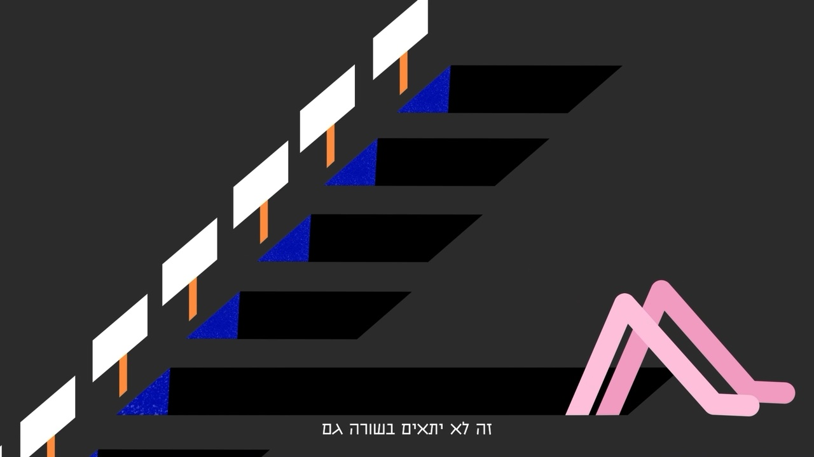
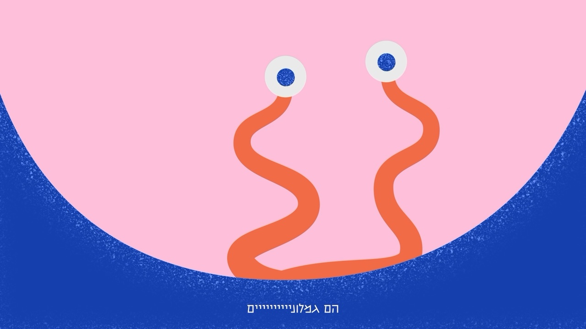

Op-Doc
- Year
- 2026
- Role
- Animation
- Tools
- After Effects, Illustrator, ChatGPT
The Idea
I Am a Tall Woman is a solo project from my third year in Bezalel’s Illustration to Animation program. The brief was an animated Op-Doc built on an audio clip. I chose a segment from Kan 11’s “Kan Mekshivim,” in which Tahel tells stories in a vivid, theatrical voice. When she said “tall people are lanky,” I knew it was the one. My question was how to convey feeling different in a light way, without leaning on literal visuals.
Process
I designed a minimalist, faceless figure with a small head and long limbs, in a palette of blue, orange, pink, black, and white. At the storyboard stage, I used transitions to replace literal descriptions with visual ideas. I cleaned the recording with an AI tool, built the soundtrack in Adobe Audition, and adjusted several movements to match its rhythm.




Decisions
I cut a long recording down to three descriptions: lanky tall people, funerals, and wrists and ankles. I dropped a passage about going out to a show because it was too long, and a grid of staring eyes because it turned the tone dark. The guiding rule was to keep the piece light. Late in the process, I added texture layers to the characters’ clothing for depth.
Credits
Animation - Adel Fitoussi
Instructor - Chen Winer
Bezalel, 2026